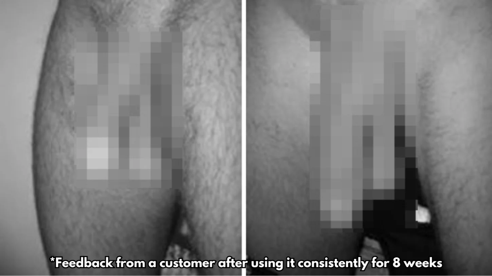
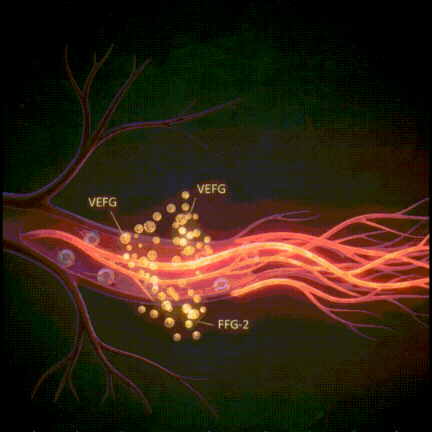
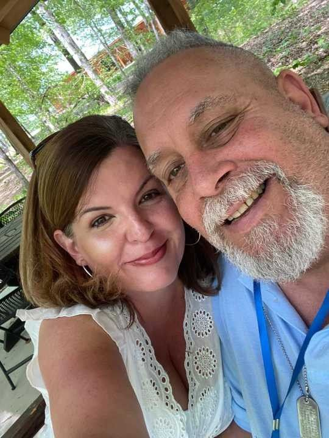
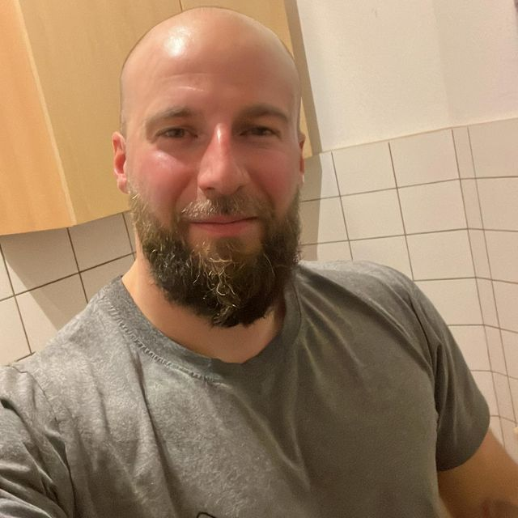
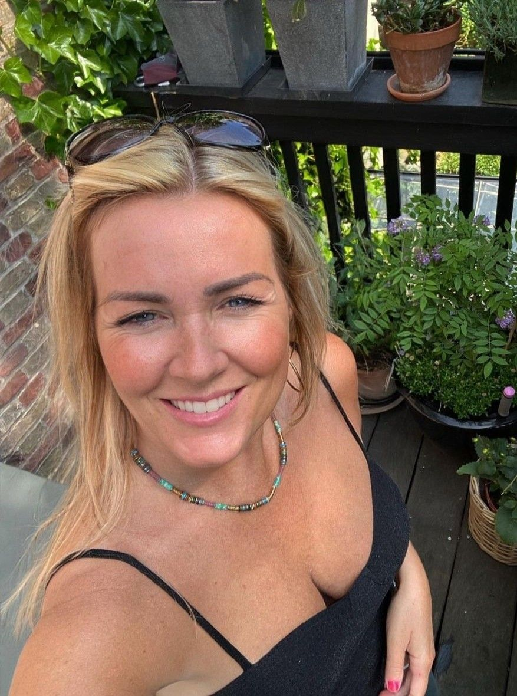

As Seen on Shark Tank: The At-Home Wave Therapy Device That's Reversed E.D. for 150,000+ American Men — Without Pills, Pumps, or Prescriptions
A Johns Hopkins urologist stunned Lori Greiner with the science. She invested on the spot. Here's how it works — and why doctors are calling it the first real fix that actually lasts.
Written by Dr. Marcus Bell, MD · Board-Certified Urologist, Johns HopkinsLast updated May 20, 2026
If you've struggled to get hard, lost firmness halfway through, or watched the spark in your relationship slowly fade — you're not alone, and it is not your fault.
Over 150,000 American men have already used the same at-home device I'm about to walk you through. Most started seeing results within the first three weeks — without a single prescription, injection, or awkward clinic visit.
This isn't another blue pill or testosterone gimmick. It's a non-invasive wave therapy device — the same clinical technology urology clinics charge $3,000+ per session for — finally made small enough to use at home, in private, in about ten minutes a day.
"This is one of the most brilliant products I've ever seen on this show. I'm in."
— Lori Greiner, Shark Tank investor
How I Discovered This At the Lowest Point of My Life
I'm Dr. Marcus Bell. I'm a board-certified urologist, trained at Johns Hopkins, and for over two decades I've been treating men with sexual dysfunction.
What none of my patients ever knew is that I was suffering from the exact same problem — quietly, for nearly four years.
By the time I was 47, I couldn't perform consistently with my own wife. I'd had every test, taken every pill, tried every injection my own colleagues prescribed. Nothing held for long. The pills worked for an hour and left me with crushing headaches. The injections worked — and humiliated me every time I had to stop and use one. My marriage started falling apart. I caught my wife crying alone in the kitchen one night. The next morning, she suggested couples counseling. I knew exactly what that meant.
That's the moment I decided to stop being the doctor for one weekend and become the patient. I locked myself in my office and read every clinical trial published in the last 12 years on erectile dysfunction. And something I had been completely missing in med school slapped me in the face.
Why Pills, Pumps, and Injections All Fail (And What Actually Causes E.D.)
Here's what every textbook tells you: an erection requires blood flow. The brain sends a signal, the heart pumps blood into the penile arteries, the tissue expands, and you get hard.
That's correct. But there's one detail almost no doctor explains:
If blood flow is the foundation of an erection, something has to be blocking it.
That "something" is a combination of two issues that build up silently over years — even in men who exercise, eat clean, and check their testosterone:
Microcalcifications — tiny hardened deposits in the walls of the penile arteries, caused by toxins, pesticides, processed food, and decades of stress
Endothelial dysfunction — the inner lining of those arteries stops releasing nitric oxide properly, the molecule that triggers the blood-flow response in the first place
That's why blue pills "work" — they force the arteries open temporarily by flooding your system with chemicals. But the underlying buildup stays. So as soon as the pill wears off, you're right back where you started. Worse, you're now dependent on it.
The breakthrough I found in the research is something called Low-Intensity Extracorporeal Shockwave Therapy — LI-ESWT for short. It's been studied at Boston University, the Mayo Clinic, and at urology centers across Israel and Germany. The data is remarkable: over 75% of men in clinical trials saw measurable improvement in erection quality without a single side effect.
The mechanism is elegant. Painless acoustic waves are passed through the tissue. They gently break down the microcalcifications, stimulate the formation of new blood vessels (a process called neovascularization), and reactivate the dormant endothelial cells lining the arteries.
In plain English: it clears the buildup, repairs the lining, and restores your body's natural ability to get hard whenever you want — the way it worked in your 20s.
This is not a workaround. It's a repair.
Wave therapy treats the actual cause — not the symptom. That's why the results compound over time and outlast any pill ever made.
What Happened When I Brought It to Shark Tank
The catch? Wave therapy machines at clinics cost $30,000+. Each session ran my patients between $400 and $800. A full protocol — six to twelve sessions — could run them more than $7,000 out of pocket.
I refused to accept that. So I spent the next 26 months engineering a compact, at-home version of the same technology — clinical-grade, doctor-approved, but small enough to fit in a drawer and simple enough to use in ten minutes a day.
That's what I brought to the Shark Tank stage. And when Lori Greiner saw the clinical data, she didn't haggle. She just said yes.

150,000+
Men served
92%
Reported firmer erections
3 wks
Average to first results
365 day
Money-back guarantee
How Fast Will I See Results?
Every body is different — but the pattern in our clinical follow-ups is consistent:
365-day money-back guarantee · Discreet shipping included
Who Is This For?
MANSCULPT™ Wave Therapy Pro was built for men dealing with one or more of these:
Trouble getting — or keeping — an erection during sex
Finishing way too fast and feeling powerless to stop it
Visible or painful curvature (Peyronie's-like symptoms)
Loss of morning erections — that quiet sign something is off
Avoiding intimacy because of fear of failure
Feeling like the man you used to be is gone
If any of those feel familiar — keep reading. This was built for exactly your situation.
Key benefits men report
Stronger, harder erections that hold up under pressure
More stamina and control — finish when you decide
Straighter, healthier performance for men with curvature
Renewed confidence in the bedroom and outside of it
Is it safe?
Yes. MANSCULPT™ is non-invasive, drug-free, and built for at-home use. It uses the same clinically inspired acoustic wave technology men's health clinics charge thousands for — now available privately, at a tiny fraction of the cost, with no known side effects in over 150,000 users.

Every week you wait, the buildup gets worse
Microcalcifications don't pause. The longer you delay, the harder the repair work — and the longer it takes to feel like yourself again. Start now and let the body do its job.
Every man reading this is choosing between two paths. There's no third option.
Path 1 — Do nothing
Keep failing in moments that matter
Watch the disappointment in her eyes grow
Stay dependent on pills with side effects
Avoid intimacy out of shame
Lose the spark in your relationship, slowly
Path 2 — Take 10 minutes a day
Get hard whenever you want — naturally
Last longer, feel in control
Be her hero again, every night
Reignite the fire in your marriage
Walk into any room with confidence
Real men, real results.
"I finally feel like the man I was at 30."
Pills had me waiting an hour and praying. With Mansculpt, after about three weeks the changes came naturally. Stronger, longer, and I'm not on anything that messes with my head. My wife said it like it was nothing — "you're different again." Best $60 I ever spent.

Mark T., 54 Verified buyer
"I refused to be on pills for the rest of my life."
I'm a diabetic and was told E.D. just comes with the territory. I didn't accept that. Used Mansculpt 4 times a week for two months — and I'm now back to morning wood every day. My doctor was speechless.

Jason R., 61 Verified buyer
"Our marriage feels new."
My husband had been struggling for years with confidence and intimacy. After he started using it I could see the difference in him — and in us. We laugh more, we feel more connected, and he's proud of himself again. That alone changed everything in our home.

Emily S., 49 Verified buyer
"I'm 72 and back to where I was at 50."
I'd given up. The pills wrecked my stomach, the pumps were embarrassing, and surgery wasn't on the table. I gave Mansculpt eight weeks like Dr. Bell said. Now I'm hard whenever I want, and my wife thinks I'm exaggerating my age when people ask. I keep my mouth shut and smile.
David K., 72 Verified buyer
Frequently asked questions
I'm in my 60s and I've tried everything. Will Mansculpt really work for me too?
Yes. Age, medical history, and how long you've had E.D. are not the variable that decides your results — what matters is whether the underlying microcalcifications and endothelial dysfunction can be reversed. They can, in nearly every case. Our oldest verified success stories are men in their 80s. Stay consistent and the body responds.
How long until I see real results?
Most men notice the first signs (morning erections, higher libido, more energy) inside the first 2 weeks. Firmer, on-demand performance typically arrives between week 3 and 4. Peak transformation hits between week 6 and 8. The work compounds — every session repairs more of what's been broken.
Do I have to change my diet, lifestyle, or take supplements?
No. Mansculpt works regardless of your lifestyle because it addresses the physical cause directly in the tissue. Eating better and exercising will accelerate things, but they aren't required. You don't have to "earn" your results.
Are there any side effects?
In over 150,000 verified users, none reported. Acoustic wave therapy is a passive, drug-free, non-invasive technology that's been studied for over a decade at major urology centers worldwide. Safer than aspirin.
How does the 365-day guarantee work?
You have one full year from the day your order arrives to test it. If you're not satisfied — for any reason, even just because — write our team and we refund 100% of your purchase. No interrogation, no return runaround, no fine print. This is the most generous guarantee in men's health for one reason: we know it works.
What will show up on my credit card statement?
Discreet billing. The descriptor on your statement uses a neutral parent-company name — no mention of the product, the category, or anything personal. Shipping is the same: plain box, no branding outside, no return-address tells.
How long does shipping take?
3–5 business days within the U.S., free of charge on every order. Orders are processed and shipped within 24 hours of purchase. You'll receive a tracking link by email.
What if it doesn't work for me?
Send it back inside 365 days for a full refund — no questions asked, no friction. You're protected for an entire year. There is genuinely zero risk in trying it.